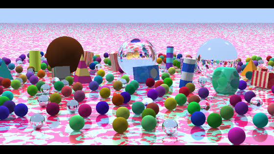
Random spheres
A large mixed scene with hundreds of spheres.
Open scene ↗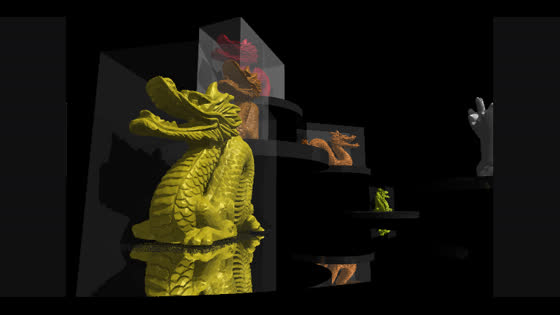
Dragon showcase
Six dragon meshes in a larger render.
Open scene ↗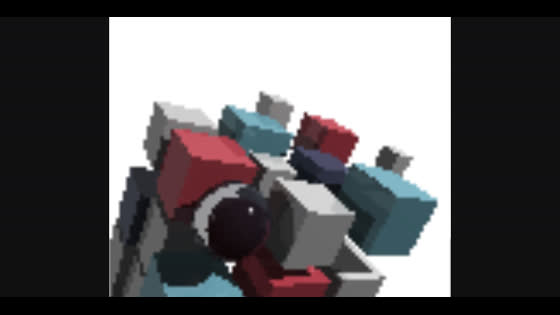
Book cover
Explore the scene from the book's cover appendix.
Open scene ↗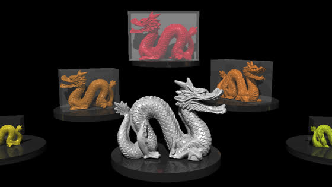
Dragons
A larger model scene that may take longer to render.
Open scene ↗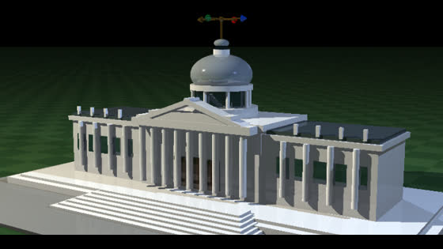
US Capitol
Explore a detailed building scene.
Open scene ↗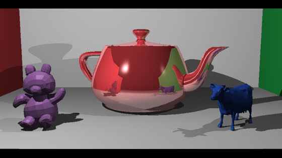
Polygon models
Three OBJ meshes in a red and green room.
Open scene ↗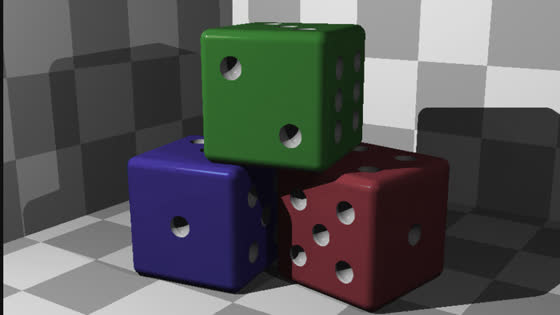
CSG dice
Rounded edges and recessed pips built with shape operations.
Open scene ↗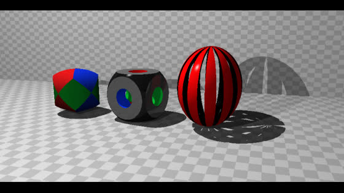
CSG showcase
A tricylinder, carved cube, and slotted hollow sphere.
Open scene ↗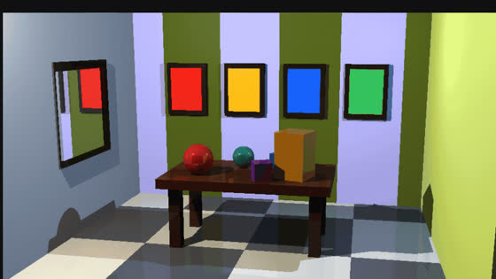
Furnished room
Explore a room built largely from cubes.
Open scene ↗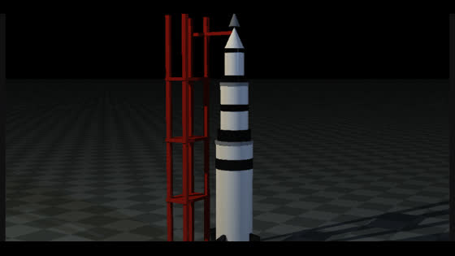
Saturn V rocket
A larger scene built from cubes, cylinders, and cones.
Open scene ↗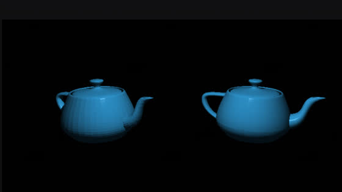
Teapot comparison
Explore the same mesh with flat and smooth normals.
Open scene ↗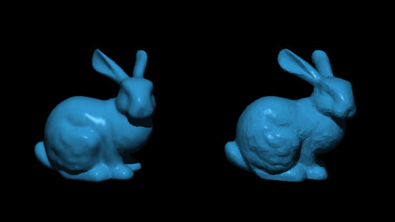
Bunny normals
Compare flat and interpolated shading on a mesh.
Open scene ↗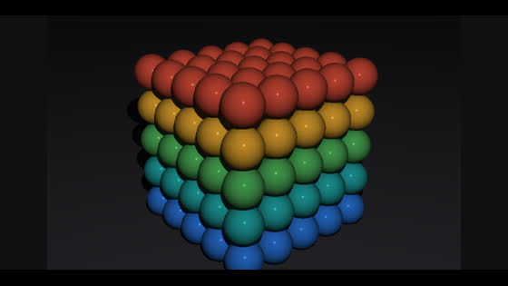
Sphere grid
A dense grid for exploring bounding volumes.
Open scene ↗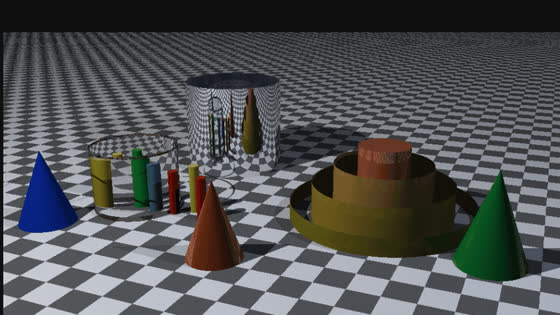
Material study
Glass, metal, and color on cylinders and cones.
Open scene ↗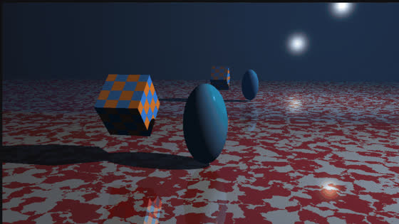
Interactive demo
Colors, patterns, transforms, and reflections.
Open scene ↗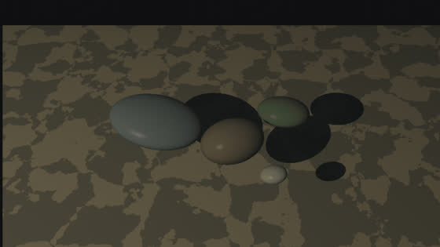
Pond and rocks
Change the view to see reflection and refraction.
Open scene ↗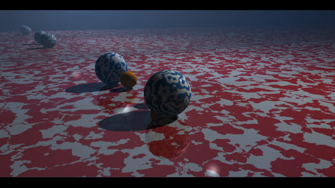
Perturbed patterns
Explore noisy patterns and reflective materials.
Open scene ↗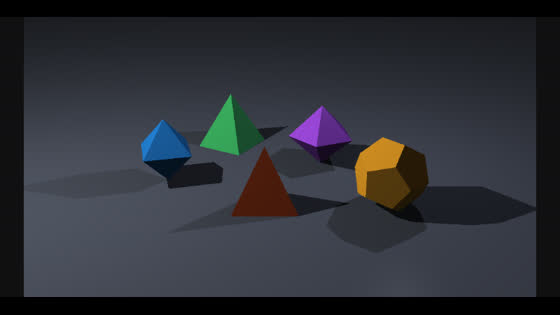
Triangle solids
Inspect polyhedra assembled from editable triangles.
Open scene ↗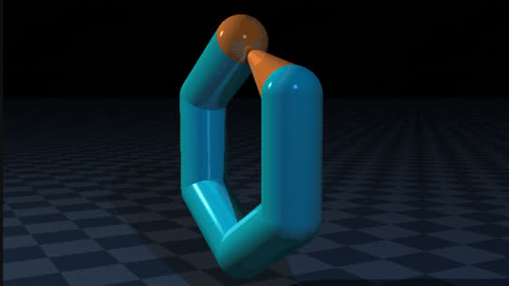
Grouped hexagon
Select and change shapes inside a group.
Open scene ↗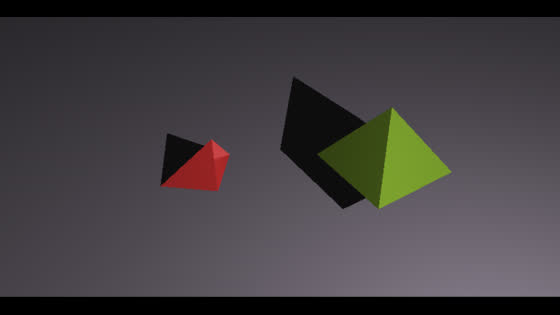
Two pyramids
A focused triangle and group example.
Open scene ↗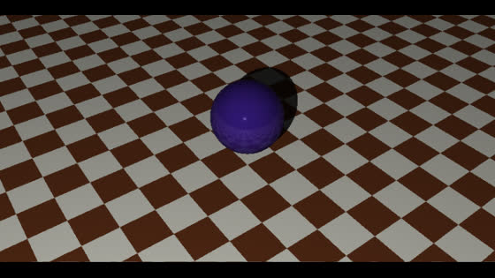
Sphere and floor
A small scene for trying materials and transforms.
Open scene ↗